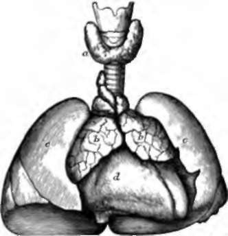

Chapter XII. The Ductless Glands, The Liver, And The Kidneys
Description
This section is from the book "Animal Physiology: The Structure And Functions Of The Human Body", by John Cleland. Also available from Amazon: Animal Physiology, the Structure and Functions of the Human Body.
Chapter XII. The Ductless Glands, The Liver, And The Kidneys
In the preceding chapters we have so far traced the history of the blood, that we have seen how it is vitiated in the tissues and oxygenated in the lungs, and how it is replenished with material both from the waste of the tissues and from the digested food; we have noted one source of origin of the corpuscles, and studied the purification from carbonic acid. But there still remain for consideration various processes of elaboration and depuration carried on by the spleen and other ductless glands, by the liver, and by the kidneys.
120. The Ductless Glands
Under this head are grouped the spleen, the thyroid and thymus glands, the suprarenal capsules, and also the lymphatic glands and the closed follicles of the digestive tube, both of which have been already considered (pp. 103 and 153).
The thyroid body is a limited structure, consisting, in the human subject, of two lobes joined together by an isthmus, and situated on the windpipe in the neck, and is larger in the female than the male. It is exceedingly vascular, and consists of numbers of minute vesicles, with glairy contents, and each invested with a rich network of capillaries. It is sometimes subject to enormous enlargement, constituting the disease called goitre, a tumour remarkable not merely for the great size which it sometimes acquires, but for being associated frequently with a form of idiocy and general deficiency of development, to which the name of cretinism is given. But nothing, precise is known of the function of the thyroid body.
The thymus gland is a structure situated lower down on the windpipe than the thyroid, being placed in the upper part of the chest. In its early history it is closely associated with the thyroid, but its structure is different in detail.
Fig. 84. TnvroiD and Thymus Bodies, three months before birth. a. Thyroid body resting on trachea and larynx; b, b, thymus; e, c, lungs, as yet unexpanded; d, heart.
Fig. 85. Suprarenal Capsule and Kidney, three months before birth; the kidney presenting at this period a lobulated surface.
It reaches its greatest development in infancy, and disappears usually with childhood. Its function, supposed to be connected with blood-elaboration, is unknown.
The suprarenal capsules, are a pair of bodies surmounting the kidneys, and fitting on to their upper ends. Like the thymus, they are exceedingly large before birth. They are highly vascular in the interior, but are likewise remarkable for their copious supply of sympathetic nerves, and it is scarcely safe to say that they are blood-elaborating glands at all. All that is known about them is, that there is a peculiar form of wasting disease accompanied with deep bronzing of the skin, in which there is frequently found, after death, an extensive alteration of these structures.
Continue to:
- prev: 119. The Difference In The Absorbing Power Of The Lacteals And The Blood Vessels
- Table of Contents
- next: 121. The Spleen